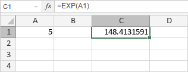

EXP funkcija
EXP funkcija je jedna od funkcija za matematiku i trigonometriju. Koristi se da vrati konstantu e podignutu na željenu stepen. Konstantna vrednost e je jednaka 2,71828182845904.
Sintaksa
EXP(broj)
EXP funkcija ima sledeći argument:
| Argument | Opis |
|---|---|
| broj | Stepen na koji želite da podignete e. |
Napomene
Kako primeniti EXP funkciju.
Primeri
Slika ispod prikazuje rezultat koji vraća EXP funkcija.
